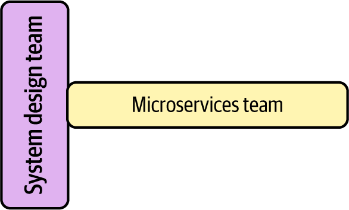
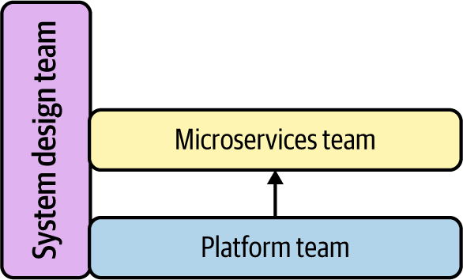
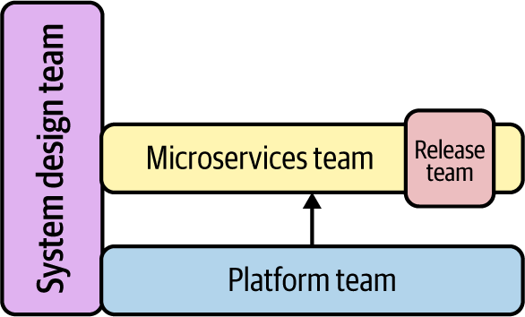
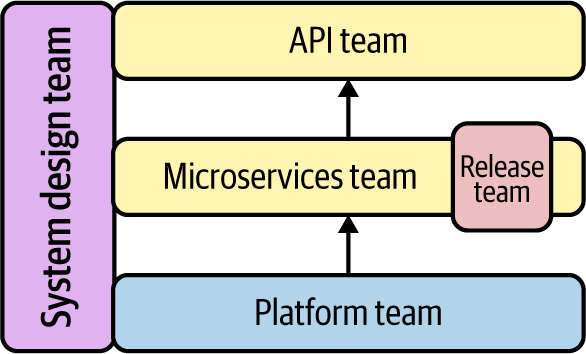

Trong cuốn sách này, chúng ta sẽ xây dựng một ứng dụng dựa trên microservices. Để làm được điều đó, chúng ta sẽ thiết kế và xây dựng các microservice cũng như hạ tầng và công cụ cần thiết để hỗ trợ chúng. Tuy nhiên, sự thật là để thành công với microservices, chỉ viết mã và triển khai là chưa đủ. Muốn thực sự thành công, bạn cần có đúng con người, đúng cách làm việc và đúng nguyên tắc để toàn bộ hệ thống vận hành trơn tru. Đó là lý do chúng ta muốn bắt đầu hành trình của mình bằng việc thiết kế một mô hình vận hành tổng quát cho ứng dụng.
Một mô hình vận hành là tập hợp con người, quy trình và công cụ nằm bên dưới hệ thống của bạn. Nó định hình mọi quyết định và công việc mà bạn thực hiện khi xây dựng phần mềm. Ví dụ, một mô hình vận hành có thể xác định trách nhiệm của các nhóm. Nó cũng có thể xác định cơ chế quản trị đối với việc ra quyết định và thực thi công việc.
Bạn có thể xem mô hình vận hành như “hệ điều hành” của giải pháp. Mọi công việc cần thiết để xây dựng microservices đều diễn ra trên nền các cấu trúc nhóm, quy trình và ranh giới mà bạn xác định. Trên thực tế, mô hình vận hành có thể có phạm vi rất rộng và mức độ chi tiết rất cao. Nhưng đối với phần xây dựng của chúng ta, chúng ta sẽ thu hẹp phạm vi và tập trung vào những phần quan trọng nhất của một hệ thống microservices, đó là cách các nhóm được thiết kế và cách họ làm việc với nhau.
Đó là nội dung chúng ta sẽ đề cập trong chương này: mối quan hệ giữa các nhóm và việc triển khai microservices. Chúng ta sẽ giới thiệu một công cụ tên là Team Topologies và đến cuối chương, chúng ta sẽ có một thiết kế dựa trên đội nhóm để dùng làm nền tảng cho phần còn lại của quá trình xây dựng.
Bạn không cần thực sự tập hợp đúng những con người và đội nhóm mà chúng ta đã xác định để có thể theo dõi mô hình microservices “up and running” này.
Hãy bắt đầu bằng việc xem tại sao các nhóm và thiết kế nhóm lại quan trọng đến vậy ngay từ đầu.
Mô hình mà chúng ta đang dùng trong cuốn sách này chủ yếu quan tâm đến các quyết định về công nghệ và công cụ. Nhưng chỉ riêng công nghệ sẽ không mang lại cho bạn giá trị cần có từ một hệ thống microservices. Công nghệ là quan trọng. Lựa chọn công nghệ tốt giúp bạn dễ làm những việc vốn có thể khó đến mức gần như không khả thi. Ở trạng thái tốt nhất, công nghệ mở ra cánh cửa và khai mở những cơ hội mới. Tuy vậy, bản thân nó không có ích nếu đứng một mình.
Bạn có thể có những công cụ và nền tảng tốt nhất thế giới, nhưng bạn vẫn sẽ thất bại nếu không có đúng văn hóa và tổ chức để sử dụng chúng. Mục tiêu mà chúng ta muốn đạt tới trong mô hình này là đặt công nghệ tốt vào tay những nhóm độc lập, hoạt động hiệu quả. Vì vậy, chúng ta cần bắt đầu bằng việc xem xét các kiểu nhóm và cấu trúc nào sẽ phù hợp nhất với mô hình mà chúng ta sắp phát triển.
Trong một hệ thống microservices, văn hóa và thiết kế nhóm có ý nghĩa rất lớn. Qua quá trình nghiên cứu cho cuốn sách này và từ chính kinh nghiệm triển khai của mình, chúng tôi đã học được một sự thật quan trọng: con người và quy trình là các yếu tố thành công mang tính sống còn. Một triển khai microservices chỉ thực sự có giá trị khi nó trao cho bạn sự tự do để thay đổi một cách dễ dàng và nhanh chóng. Nhưng trên thực tế, thay đổi lại là hệ quả từ năng lực ra quyết định của tổ chức bạn. Nếu bạn không thể đưa ra các quyết định chất lượng một cách nhanh chóng, bạn sẽ rất khó khai thác được giá trị từ microservices. Nó giống như việc chế tạo một chiếc xe đua với động cơ quá tệ. Dù chiếc xe có được lắp ráp tốt đến đâu, nó cũng sẽ không bao giờ chạy như đáng lẽ phải chạy.
Ý tưởng rằng thiết kế nhóm và văn hóa là quan trọng không phải điều mới mẻ. Mel Conway đã diễn đạt rất hùng hồn tác động của cấu trúc nhóm lên thiết kế hệ thống trong bài viết nay đã rất nổi tiếng của ông, “How Do Committees Invent?” Những quan sát sâu sắc của Mel Conway sau đó đã dẫn tới một cách diễn đạt lại luận điểm của ông còn nổi tiếng hơn nữa, được gọi là “Định luật Conway”:
Bất kỳ tổ chức nào thiết kế ra một hệ thống (theo nghĩa rộng) đều sẽ tạo ra một thiết kế có cấu trúc là bản sao của cấu trúc giao tiếp trong tổ chức đó.
Được gán cho Fred Brooks
Conway cho chúng ta biết rằng đầu ra của một tổ chức phản chiếu cách con người và các nhóm trong tổ chức đó giao tiếp. Ví dụ, hãy hình dung một nhóm microservices buộc phải tham vấn một nhóm chuyên gia cơ sở dữ liệu tập trung mỗi khi họ cần thay đổi mô hình dữ liệu. Khả năng cao là mô hình dữ liệu và cách hiện thực dữ liệu trong hệ thống được tạo ra cũng sẽ bị tập trung hóa. Hệ thống cuối cùng sẽ trở nên giống với mô hình tổ chức và phối hợp.
Điểm rút ra ở đây là con người trong một hệ thống microservices thực sự quan trọng. Cách họ ra quyết định, thực hiện công việc và giao tiếp với nhau có tác động rất lớn đến hệ thống được tạo ra. Nói một cách tổng quát, có ba yếu tố con người có ảnh hưởng lớn nhất đến một hệ thống microservices: quy mô nhóm, kỹ năng của nhóm và sự phối hợp liên nhóm. Hãy cùng xem kỹ hơn từng yếu tố, bắt đầu từ quy mô.
Từ “micro” trong microservices hàm ý rằng quy mô là quan trọng và càng nhỏ càng tốt. Thành thật mà nói, đó là một cách đơn giản hóa hơi quá mức. Nhưng sự thật vẫn là: xây dựng những dịch vụ nhỏ hơn và có thể triển khai được là một phần quan trọng để thành công với microservices. Và hóa ra quy mô của những nhóm xây dựng các dịch vụ đó cũng cực kỳ quan trọng.
Nếu bạn có quá nhiều người trong một nhóm, họ sẽ phải dành nhiều thời gian hơn để giao tiếp với nhau. Sự phối hợp nội bộ đó sẽ làm nhóm chậm lại, dẫn đến việc phân phối thay đổi chậm hơn. Nếu bạn có quá ít người, bạn sẽ không có đủ đầu óc và bàn tay để hoàn thành công việc. Việc “định cỡ phù hợp” cho nhóm là một phần quan trọng trong thiết kế hệ thống của bạn. Dù không có một con số cụ thể nào phù hợp cho mọi người trong mọi hoàn cảnh, kinh nghiệm thực tế và các nghiên cứu về quy mô nhóm đã dần hình thành thành thông lệ được chấp nhận rộng rãi.
Bill Gore, đồng sáng lập công ty Gore-Tex W. L. Gore, đã giới hạn quy mô các nhóm trong công ty để giữ cho chúng hiệu quả. Để làm được điều đó, ông đặt ra một giới hạn quy mô ngay từ đầu: mọi người trong nhóm phải có mối quan hệ cá nhân với nhau. Khi một nhóm trở nên lớn đến mức các thành viên không còn biết nhau, đơn vị đó đã phát triển quá lớn.
Nhà nhân học Robert Dunbar, trong các nghiên cứu của mình về hành vi xã hội của tinh tinh, đã quan sát thấy quy mô bầy đàn của tinh tinh có tương quan với kích thước não bộ của chúng. Từ việc ngoại suy những phát hiện này sang hiểu biết của mình về não bộ con người, ông đã thiết lập ra một tập hợp các quy mô nhóm dành cho con người. Số Dunbar cho rằng chúng ta chỉ có thể duy trì một cách thoải mái 150 mối quan hệ ổn định, dựa trên kích thước bộ não của mình. Dunbar cũng xác định rằng con người chỉ có thể duy trì khoảng 5 mối quan hệ thân mật trong gia đình và khoảng 15 người bạn thực sự tin cậy.
Có lẽ nổi tiếng nhất, CEO Amazon Jeff Bezos đã đưa cho chúng ta “quy tắc hai chiếc pizza”. Theo đó, một nhóm tại Amazon nên nhỏ đến mức chỉ cần hai chiếc pizza là có thể cho cả nhóm ăn no. Dù các chi tiết cụ thể về kích thước pizza hay sức ăn của từng thành viên không thật rõ ràng, một nhóm hai pizza có lẽ sẽ rơi vào khoảng 5 đến 15 người mà Dunbar mô tả và có cơ hội cao duy trì được nguyên tắc quan hệ cá nhân mà Gore đề xuất.
Tất cả những câu chuyện này đều chỉ tới một giới hạn về quy mô dựa trên khả năng giao tiếp hiệu quả giữa con người với nhau. Kinh nghiệm và nghiên cứu của chúng tôi cũng phù hợp với trực giác đó. Để giữ cho tốc độ thay đổi ở mức cao, chúng ta cần giới hạn quy mô của các nhóm trong hệ thống. Trong mô hình microservices của mình, chúng ta sẽ giữ quy mô nhóm ở đâu đó trong khoảng từ năm đến tám người.
Giữ quy mô nhóm nhỏ sẽ giúp chúng ta hạn chế lượng tương tác nội bộ cần thiết. Nhưng điều đó cũng kéo theo một hệ quả dây chuyền. Nhóm nhỏ hơn thường đồng nghĩa với nhiều nhóm hơn. Vì vậy, chúng ta sẽ cần cẩn thận trong cách thiết kế phần còn lại của hệ thống. Có các nhóm nhỏ sẽ chẳng giúp ích gì nếu họ phải dành toàn bộ thời gian để phối hợp với nhau. Để tránh điều đó, chúng ta cần cho phép công việc độc lập và tự chủ ở mức cao nhất có thể mà vẫn an toàn.
Một tác dụng phụ khác của việc thu nhỏ nhóm là nó giới hạn số lượng chuyên gia mà chúng ta có thể có trong mỗi nhóm. Khi nhóm có ít người hơn, chúng ta cần bảo đảm rằng tổng thể nhóm vẫn có đủ tài năng để tạo ra đầu ra chất lượng. Đó là lý do vì sao chúng ta cần xem xét cách phân bổ con người vào các nhóm dưới góc độ kỹ năng.
Một nhóm chỉ có thể giỏi đến mức mà các thành viên của nó cho phép. Nếu muốn có các nhóm hiệu suất cao, chúng ta cần đặc biệt chú ý đến cách quyết định ai sẽ được tham gia vào nhóm. Ví dụ, nhóm của chúng ta sẽ cần những vai trò và chuyên môn nào? Từng thành viên cần có mức độ tài năng và kinh nghiệm ra sao? Tỷ lệ pha trộn kỹ năng và kinh nghiệm như thế nào là phù hợp?
Sự thật là rất khó để trả lời các câu hỏi này theo một cách áp dụng phổ quát. Đó là bởi con người và văn hóa thường là những thứ độc nhất ở nơi bạn làm việc. Ví dụ, một vài công ty sẵn sàng chi rất nhiều tiền để tuyển dụng top 1% nhân tài công nghệ trên toàn thế giới. Trong khi đó, một công ty khác có thể chủ yếu tuyển nhân lực địa phương, tập trung vào phát triển nghề nghiệp và học hỏi trong công việc từ một số ít chuyên gia. Thiết kế nhóm tốt ở hai công ty này có lẽ sẽ rất khác nhau.
Chúng ta muốn cuốn sách này tập trung vào việc xây dựng một triển khai microservices. Vì vậy, chúng ta sẽ không đi quá sâu vào thiết kế tổ chức và văn hóa. Tin tốt là có một nguyên tắc chung mà chúng ta có thể áp dụng và có vẻ hữu ích với những người triển khai microservices trong hầu hết các bối cảnh. Đó là nguyên tắc về nhóm đa chức năng.
Trong một nhóm đa chức năng, những người có các loại chuyên môn khác nhau (hay các chức năng khác nhau) cùng làm việc hướng tới một mục tiêu chung. Chuyên môn đó có thể trải dài trên cả miền công nghệ lẫn miền nghiệp vụ. Ví dụ, một nhóm đa chức năng có thể bao gồm nhà thiết kế UX, lập trình viên ứng dụng, product owner và business analyst.
Nhóm đa chức năng đã tồn tại từ rất lâu, ít nhất là từ thập niên 1950 tại Northwestern Mutual Life Insurance Company.
Một lợi thế lớn của cách xây dựng nhóm này là bạn có thể đưa ra các quyết định tốt hơn với tốc độ nhanh hơn. Trước đó, chúng ta đã xác lập giới hạn trên cho quy mô nhóm bằng cách giới hạn số thành viên ở mức tám người. Một nhóm “đúng cỡ” với đúng người trên tàu có thể di chuyển với vận tốc cao và đủ thẩm quyền.
Nhưng ai là đúng người? Khi nói về quy mô nhóm, chúng ta có các giai thoại, kinh nghiệm và nghiên cứu học thuật để tham chiếu. Nhưng khi nói đến chân dung nhóm, việc tìm được những câu chuyện nhất quán khó hơn nhiều. Ví dụ, khi quan sát một nhà cung cấp đám mây lớn làm microservices, chúng tôi thấy họ sử dụng bốn đến năm chuyên gia có kiến thức xuyên miền, kết hợp với một chuyên gia kiểm thử. Ngược lại, chúng tôi cũng thấy các công ty tư vấn dùng một tổ hợp lớn gồm kỹ sư chuyên biệt, product owner, quản lý dự án và chuyên gia kiểm thử trên mỗi nhóm. Tài năng, kinh nghiệm và văn hóa của tổ chức bạn sẽ quyết định chính xác tổ hợp con người đó trông như thế nào.
Vì vậy, thay vì áp đặt chính xác nhóm của bạn cần những vai trò nào, chúng ta sẽ đưa ra hai quyết định chung cho mô hình này. Thứ nhất, các nhóm nên là đa chức năng. Kinh nghiệm của chúng tôi cho thấy công việc microservices vận hành tốt hơn khi các nhóm có thể tự đưa ra quyết định tốt. Nhóm đa chức năng cho phép điều đó. Thứ hai, các nhóm nên gồm những thành viên trực tiếp ảnh hưởng tới đầu ra. Bằng cách này, chúng ta chọn những người mà mình biết chắc có thể mang lại giá trị cho nhóm. Chúng ta không cần những người chỉ quan sát hoặc những người chỉ liên quan rất gián tiếp đến công việc và quyết định đang được thực hiện.
Với đúng quy mô và đúng con người, chúng ta sẽ có khả năng xây dựng những nhóm hiệu quả có thể hoàn thành công việc. Khi số lượng nhóm tăng lên, chúng ta cũng cần xem xét cách các nhóm phối hợp với nhau. Đó là thuộc tính cuối cùng của nhóm mà chúng ta cần giải quyết.
Xây dựng một nhóm có quy mô phù hợp và lấp đầy nó bằng đúng con người sẽ giúp chúng ta tạo ra những nhóm hiệu suất cao. Nhưng chính sự giao tiếp giữa các nhóm, chứ không phải bên trong mỗi nhóm, mới là thứ có thể thực sự kéo chậm một hệ thống microservices. Chúng ta đã nêu bật bài toán về chi phí phối hợp trong “Bài toán Chi phí Phối hợp”. Nếu có thể giảm lượng phối hợp phải diễn ra giữa các nhóm, các nhóm microservices của chúng ta sẽ có thể phân phối thay đổi nhanh hơn.
Sẽ thật tuyệt nếu các nhóm microservices của chúng ta có thể hành động hoàn toàn tự chủ và độc lập. Nếu các nhóm được tự do đưa ra quyết định riêng về thiết kế, phát triển, kiểm thử và triển khai, sẽ không có “ma sát tổ chức” nào làm chậm họ. Theo kinh nghiệm của chúng tôi, đây không phải là một phương thức vận hành thực tế.
Đó là bởi phối hợp và cộng tác là điều quan trọng đối với thành công của một tổ chức. Chúng ta có thể muốn các nhóm microservices hoạt động độc lập, nhưng chúng ta cũng muốn họ tạo ra những dịch vụ có giá trị cho khách hàng, người dùng và tổ chức. Điều đó có nghĩa là giao tiếp là điều bắt buộc để thiết lập mục tiêu chung, trao đổi yêu cầu thay đổi, chuyển giao phản hồi và giải quyết vấn đề.
Không chỉ vậy, khi các nhóm hoạt động hoàn toàn độc lập, cơ hội chia sẻ cũng ít đi. Các nhóm microservices làm việc độc lập có thể chọn đúng công cụ cho đúng bài toán và xây dựng những hệ thống rất hiệu quả. Nhưng hiệu quả đó chỉ cục bộ ở mức nhóm. Đôi khi điều đó có nghĩa là chúng ta đánh mất hiệu quả ở cấp độ toàn hệ thống. Ví dụ, nếu tất cả các nhóm đều tự thiết kế và xây dựng kiến trúc mạng trên đám mây của riêng mình, chúng ta đã bỏ lỡ cơ hội chỉ làm việc đó một lần rồi chia sẻ cho tất cả.
Vẫn có thể xây dựng một tổ chức cho phép sự độc lập và tự chủ hiệu quả của các nhóm thông qua tự tổ chức. Ví dụ, người tiên phong về microservices Fred George đã mô tả một phương pháp mà ông gọi là Programmer Anarchy, trong đó các nhóm công nghệ có toàn quyền tự chủ (và toàn bộ trách nhiệm) trong việc hình thành nhóm, chọn công việc và thiết kế giải pháp của riêng mình. Nhưng theo kinh nghiệm của chúng tôi, phần lớn các tổ chức doanh nghiệp sẽ gặp khó khăn nếu muốn vận hành mô hình này một cách nhất quán.
Nếu chúng ta nghiêng quá xa về phía độc lập và tự chủ của nhóm, chúng ta sẽ đưa vào hệ thống các sự kém hiệu quả ở cấp độ toàn cục và sự lệch pha với các mục tiêu của tổ chức. Nếu đưa vào quá nhiều phối hợp, chúng ta có nguy cơ làm cả hệ thống chậm lại và đánh mất những lợi ích của microservices có khả năng thay đổi cao. Thách thức nằm ở việc đạt được điểm cân bằng phù hợp giữa công việc độc lập và nỗ lực phối hợp. Điều đó đòi hỏi thử nghiệm và tinh chỉnh liên tục trong thiết kế đội nhóm của bạn.
Quan trọng nhất, tối ưu hóa việc phối hợp giữa các nhóm đòi hỏi một nỗ lực thiết kế chủ động. Một trong những sai lầm mà chúng tôi từng thấy ở người thực hành là chỉ tập trung vào kiến trúc kỹ thuật. Khi điều đó xảy ra, thiết kế nhóm sẽ hình thành xung quanh công nghệ đã được tạo ra. Chỉ đến lúc đó, các vấn đề của mô hình phối hợp mới trở nên hiển hiện. Và đến khi ấy, việc thay đổi thường đã quá tốn kém hoặc quá khó khăn.
Để tránh vấn đề này, chúng ta sẽ xử lý việc phối hợp và thiết kế nhóm như bước đầu tiên của quá trình thiết kế hệ thống. Một số người gọi đây là “inverse Conway maneuver”, vì cấu trúc giao tiếp mà chúng ta thiết kế cuối cùng sẽ định hình hệ thống được tạo ra. Dù bạn muốn gọi nó là gì, chúng tôi nhận thấy rằng bắt đầu bằng việc tập trung vào thiết kế nhóm và phối hợp thực sự giúp bạn thành công hơn với thiết kế microservices. Trên thực tế, điểm này quan trọng đến mức chúng ta sẽ ghi lại nó như một quyết định.
Chúng ta sẽ đề cập nội dung này trong phần còn lại của chương. Trước tiên, chúng ta sẽ giới thiệu một công cụ hữu ích để thiết kế mô hình nhóm microservices gọi là Team Topologies.
Vì chúng ta sẽ bắt đầu công việc thiết kế bằng việc tập trung vào các nhóm, nên chúng ta cần một cách để ghi nhận và truyền đạt các quyết định của mình. Có nhiều cách để tài liệu hóa thiết kế nhóm. Đối với mô hình này, chúng ta sẽ sử dụng một công cụ thiết kế gọi là Team Topologies.
Team Topologies là một cách tiếp cận thiết kế do Matthew Skelton và Manuel Pais sáng tạo ra. Chúng tôi thích sử dụng nó vì nó cung cấp một ngôn ngữ chính thức để nói về thiết kế nhóm, với sự tập trung đặc biệt vào cách các nhóm làm việc với nhau.
Chúng ta sẽ không sử dụng mọi khía cạnh của cách tiếp cận Team Topologies trong công việc thiết kế của mình. Thay vào đó, chúng ta sẽ khai thác ba thành phần: loại nhóm, chế độ tương tác giữa các nhóm và sơ đồ hóa. Với những phần này, chúng ta sẽ có thể xây dựng một thiết kế đơn giản nhưng hữu dụng cho các nhóm microservices.
Tiếp theo, chúng ta sẽ xem xét các phần khác nhau của cách tiếp cận Team Topologies, bắt đầu với những loại nhóm mà chúng ta có thể định nghĩa.
Một trong những khái niệm cốt lõi của Team Topologies là loại nhóm. Đây là các nguyên mẫu hoặc danh mục mô tả bản chất cơ bản của một nhóm, xét từ góc nhìn giao tiếp của nhóm đó với phần còn lại của tổ chức. Team Topologies định nghĩa bốn loại nhóm: stream-aligned, enabling, complicated-subsystem và platform. Hãy cùng điểm qua từng loại:
Một nhóm stream-aligned sở hữu và vận hành một phần công việc có thể bàn giao. Đặc trưng quan trọng nhất của kiểu nhóm này là liên tục bàn giao một thứ gì đó có liên quan tới tổ chức kinh doanh. Nhóm stream-aligned thể hiện rất rõ nhận xét của CTO Amazon Werner Vogels về trách nhiệm của các nhóm ở Amazon: “You build it, you run it.” Các nhóm stream-aligned không giải tán sau một lần phát hành. Thay vào đó, họ tiếp tục sở hữu và triển khai một “dòng” thay đổi, cải tiến và sửa lỗi cho phần giá trị nghiệp vụ mà mình chịu trách nhiệm. Ví dụ, các nhóm microservices thường là stream-aligned vì họ liên tục phát hành tính năng cho những dịch vụ mà mình sở hữu.
Một nhóm enabling hỗ trợ công việc của các nhóm khác theo mô hình gắn kết kiểu tư vấn. Những nhóm này thường gồm các chuyên gia và chuyên viên chủ đề có thể bắc cầu cho những khoảng trống về năng lực hoặc khả năng. Nhưng họ cũng có thể giúp từng nhóm hiểu bức tranh lớn hơn của tổ chức hoặc ngành mà họ đang hoạt động. Ví dụ, một nhóm kiến trúc dạng enabling có thể giúp các nhóm microservices hiểu những tiêu chuẩn và quy ước kỹ thuật mới nổi trong tổ chức.
Loại nhóm này làm việc trên một miền hoặc một chủ đề chuyên môn khó hiểu. Hoặc ít nhất, nó đủ khó để tổ chức không có sẵn nhiều nguồn lực cho lĩnh vực đó. Một số vùng bài toán không mở rộng tốt và không thể nhúng vào mọi nhóm. Ví dụ, tinh chỉnh phần mềm để đạt mức an toàn mật mã đòi hỏi một loại chuyên môn và kinh nghiệm rất đặc biệt. Thay vì cố gắng nhân rộng kỹ năng đó sang tất cả các nhóm, phần lớn tổ chức sẽ tạo ra một nhóm bảo mật dạng complicated-subsystem để làm việc với từng nhóm khi cần.
Giống như các nhóm enabling, nhóm platform cung cấp hỗ trợ cho phần còn lại của tổ chức, nhưng có một khác biệt quan trọng: nhóm platform mang đến trải nghiệm hỗ trợ tự phục vụ cho người dùng của mình. Trong khi các nhóm enabling và complicated-subsystem bị giới hạn bởi băng thông của con người, nhóm platform đầu tư vào việc xây dựng các công cụ và quy trình hỗ trợ có thể mở rộng dễ dàng. Điều này đòi hỏi đầu tư ban đầu nhiều hơn cũng như công sức bảo trì và hỗ trợ liên tục. Nền tảng trở thành một sản phẩm, và người dùng của nó là các nhóm còn lại trong tổ chức. Ví dụ, các nhóm vận hành có thể trở thành nhóm platform khi họ cung cấp công cụ xây dựng và phát hành để các nhóm phát triển sử dụng.
Khi đã hiểu bốn loại nhóm này, chúng ta có thể bắt đầu truyền đạt cách mình muốn các nhóm vận hành. Nhưng để thực sự truyền đạt được thiết kế nhóm, chúng ta cần thêm một phần nữa của mô hình: những cách mà các nhóm tương tác với nhau, và đó là điều chúng ta sẽ đề cập tiếp theo.
Mục tiêu của chúng ta khi thiết kế các nhóm cho quá trình xây dựng microservices là giảm lượng phối hợp cần xảy ra để công việc được hoàn thành. Các loại nhóm trong Team Topologies giúp chúng ta xác định những đặc tính cơ bản của một nhóm. Nhưng để thực sự hiểu được bằng cách nào và ở đâu chúng ta có thể giảm chi phí phối hợp, chúng ta cần diễn đạt cách các nhóm của mình đang phối hợp với nhau. Đó là nơi các chế độ tương tác của Team Topologies phát huy tác dụng. Trong cuốn sách của mình, Skelton và Pais nói đến ba chế độ tương tác, mô tả các mức độ phối hợp khác nhau:
Chế độ tương tác này đòi hỏi hai nhóm phải làm việc rất chặt chẽ với nhau. Collaboration tạo ra cơ hội để các nhóm học hỏi, khám phá và đổi mới. Nhưng nó yêu cầu mức phối hợp cao từ cả hai phía và rất khó mở rộng. Ví dụ, một nhóm bảo mật có thể collaboration với một nhóm microservices để phát triển một phiên bản phần mềm an toàn hơn. Công việc cộng tác đó có thể bao gồm cùng nhau thiết kế, viết và kiểm thử mã.
Tương tác facilitating tương tự như collaboration, nhưng mang tính một chiều. Thay vì hai nhóm cùng nhau giải quyết một vấn đề chung, một nhóm sẽ đóng vai trò hỗ trợ để giúp nhóm còn lại đạt được kết quả mong muốn. Một ví dụ về tương tác facilitating là khi một nhóm hạ tầng giúp một nhóm microservices hiểu cách khắc phục sự cố với kiến trúc mạng mà họ đã được cung cấp.
Đôi khi sự cộng tác giữa các nhóm mang màu sắc giữa bên cung cấp và bên tiêu thụ. Trong kiểu tương tác này, một nhóm cung cấp một dịch vụ cho các nhóm khác trong tổ chức với mức phối hợp tối thiểu. Điều này thường xảy ra khi một nhóm phát hành một quy trình, tài liệu, thư viện, API hoặc nền tảng dùng chung. Tương tác X-as-a-service thường mở rộng tốt vì nó đòi hỏi ít phối hợp hơn. Đây cũng là một mô hình rất phù hợp với các nhóm platform, dù những loại nhóm khác cũng có thể dùng nó. Ví dụ, một nhóm kiến trúc dạng enabling có thể tài liệu hóa một danh sách các mẫu phần mềm được khuyến nghị và cung cấp chúng cho mọi nhóm microservices theo mô hình “patterns as a service”.
Team Topologies còn nhiều thứ hơn những gì chúng ta đã phác thảo ở đây. Khi kết hợp lại, việc phân loại loại nhóm và cách tương tác này cho chúng ta một bộ từ vựng rất tốt để vẽ nên bức tranh về các nhóm microservices nên trông như thế nào, với trọng tâm đặc biệt vào thời điểm và mức độ mà các nhóm sẽ cần phối hợp với nhau. Trong phần tiếp theo, chúng ta sẽ dùng các thuật ngữ mượn từ Team Topologies để thiết kế một mô hình nhóm microservices.
Cách tiếp cận Team Topology cho chúng ta một ngôn ngữ để nói về phối hợp đội nhóm. Điều làm nó thực sự đặc biệt là đây là một ngôn ngữ được xây dựng cho biểu diễn trực quan. Trong phần này, chúng ta sẽ tạo ra một thiết kế cho các nhóm microservices để truyền đạt những nhóm mà chúng ta cần và cách họ sẽ làm việc với nhau. Khi hoàn tất, chúng ta sẽ có một sơ đồ làm nổi bật những điểm chính về phối hợp và tương tác.
Để tạo ra thiết kế nhóm và Team Topology, chúng ta sẽ đi theo cách tiếp cận từng bước như sau:
Thiết lập một nhóm thiết kế hệ thống.
Tạo một mẫu nhóm microservices cho các nhóm sau này.
Xác định các nhóm platform.
Thêm các nhóm enabling và complicated-subsystem.
Thêm các nhóm tiêu thụ chính.
Khi đi qua từng bước, chúng ta sẽ tài liệu hóa thiết kế nhóm của mình và xây dựng Team Topology. Ở mỗi bước, chúng ta sẽ xác định một hoặc nhiều nhóm, tạo và điền một tài liệu thiết kế nhóm, đồng thời vẽ các tương tác chính của nhóm đó. Hãy bắt đầu bằng việc tập trung vào nhóm thiết kế hệ thống.
Không có một Team Topology duy nhất nào phù hợp với tất cả mọi người. Không thể nào tính hết được quy mô tổ chức, con người, kỹ năng và nhu cầu của riêng bạn. Topology mà chúng tôi tạo ra ở đây là phiên bản tổng hợp từ những triển khai quy mô doanh nghiệp lớn mà chúng tôi đã thấy vận hành tốt.
Một hệ thống microservices là một hệ thống phức tạp với rất nhiều bộ phận và rất nhiều con người cùng tham gia làm việc. Phần mềm được xây dựng sẽ hình thành từ quá trình ra quyết định và thực thi công việc mang tính tập thể của toàn bộ những con người đó. Theo kinh nghiệm của chúng tôi, làm cho mọi thứ cùng hoạt động theo đúng cách bạn mong muốn không hề dễ. Đó là lý do bạn cần chỉ định một nhóm người có thể định hình tầm nhìn và hành vi của toàn bộ hệ thống. Trong mô hình này, chúng ta sẽ gọi nhóm đó là nhóm thiết kế hệ thống.
Trong mô hình của chúng ta, nhóm thiết kế hệ thống có ba trách nhiệm cốt lõi:
Nhóm thiết kế hệ thống là nhóm đầu tiên mà chúng ta đưa vào. Đây cũng là nhóm mà chúng ta kỳ vọng sẽ thiết kế ra các nhóm thực hiện công việc xây dựng hệ thống. Đó chính là công việc mà chúng ta sẽ làm trong những bước thiết kế nhóm tiếp theo. Trên thực tế, ở đây chúng ta đang cùng nhau đóng vai nhóm thiết kế hệ thống.
Ngoài việc hình thành các nhóm, nhóm thiết kế hệ thống còn phải định hình những quyết định mà từng nhóm riêng lẻ được phép đưa ra. Điều này giúp bảo đảm các nhóm tạo ra kết quả phù hợp với mục tiêu hệ thống của chúng ta. Một cách để làm điều đó là áp dụng các tiêu chuẩn để quy định nhóm được và không được làm gì. Đó là cách tiếp cận mang tính quy định mà chúng tôi đã dùng cho nhiều quyết định trong cuốn sách này. Trên thực tế, chuẩn hóa quá mức sẽ khó duy trì và quá gò bó đối với một hệ thống lành mạnh. Những người thiết kế giỏi sẽ đưa vào các cơ chế khuyến khích để thúc đẩy nhiều hơn hành vi mà họ mong muốn, cùng với các “rào chắn” đóng vai trò như các khuyến nghị và tài liệu tham chiếu mềm hơn là những quy tắc cứng nhắc.
Cuối cùng, nhóm thiết kế hệ thống cần liên tục cải thiện mọi thiết kế nhóm, tiêu chuẩn, cơ chế khuyến khích và rào chắn đã được đưa vào. Để làm được điều đó, họ cần thiết lập một cách theo dõi hoặc đo lường hệ thống như một tổng thể để có thể thực hiện thay đổi và đưa vào các cải tiến.
Việc tài liệu hóa các trách nhiệm này là rất hữu ích để chúng ta có thể truyền đạt rõ ràng từng nhóm làm gì. Trên thực tế, chúng ta nên tài liệu hóa mọi thuộc tính quan trọng của các nhóm để dễ hiểu và cải thiện chúng khi hệ thống phát triển. Ở mức tối thiểu, chúng ta nên bao quát loại nhóm trong Team Topology, quy mô nhóm và các trách nhiệm mà chúng ta đã xác định trước đó.
Hãy bắt đầu bằng việc quyết định loại Team Topology. Sau giai đoạn thiết lập ban đầu cho thiết kế nhóm và tiêu chuẩn, chúng ta kỳ vọng nhóm thiết kế hệ thống sẽ tập trung vào việc giúp các nhóm khác xây dựng microservices và các thành phần hỗ trợ. Chúng ta kỳ vọng phần lớn công việc của họ mang tính tư vấn, giúp các nhóm giao hàng điều hướng trong hệ thống. Dù nhóm thiết kế hệ thống tạo ra một hệ thống, kiểu công việc mà chúng ta muốn họ thực hiện lại mang đặc trưng của loại nhóm enabling.
Chúng ta cũng muốn nhóm thiết kế hệ thống nhỏ. Nó chỉ nên gồm một vài lãnh đạo cấp cao, kiến trúc sư và nhà thiết kế hệ thống có thể nhanh chóng đưa ra quyết định cùng nhau cho toàn hệ thống. Vì vậy, chúng ta sẽ giới hạn quy mô nhóm ở mức từ ba đến năm người, thậm chí còn nhỏ hơn cả quy mô nhóm chung mà chúng ta đã quyết định trước đó.
Hãy ghi lại các quyết định và thuộc tính nhóm này bằng cách tạo một tài liệu thiết kế gọn nhẹ cho nhóm thiết kế hệ thống. Dùng trình soạn thảo văn bản hoặc công cụ tài liệu yêu thích của bạn, hãy tạo một tệp tên là system-design-team.md và điền nội dung như sau:
#Nhóm Thiết kế Hệ thống##Loại Nhóm Enabling##Quy mô Nhóm 3-5 Người##Trách nhiệm*Thiết kế cấu trúc nhóm*Thiết lập tiêu chuẩn và "rào chắn"*Liên tục cải thiện hệ thống
Điểm hay của việc sử dụng một tệp văn bản để tài liệu hóa nhóm là chúng ta có thể đối xử với nó như mã nguồn. Nhờ vậy, chúng ta có thể lưu tài liệu này trong một kho mã nguồn và quản lý phiên bản mỗi khi cần thay đổi. Ngoài ra, bạn cũng có thể dùng wiki, kho tài liệu hoặc bất cứ thứ gì phù hợp nhất với công ty của mình. Chúng tôi để bạn tự quyết định cách muốn quản lý các tệp thiết kế nhóm. Bạn có thể tìm thấy toàn bộ ví dụ về thiết kế nhóm của chúng tôi trong kho GitHub của chúng tôi.
Tại thời điểm này, thông thường chúng ta sẽ biểu diễn nhóm bằng sơ đồ trực quan và vẽ ra các tương tác của nó với những nhóm khác trong hệ thống. Đây là phần cốt lõi trong công việc thiết kế nhóm và cho phép chúng ta hình dung cách các nhóm sẽ làm việc với nhau. Ví dụ, chúng ta có thể kỳ vọng nhóm thiết kế hệ thống sẽ dùng mô hình tương tác facilitating với các nhóm microservices. Nhưng vì đây là nhóm đầu tiên chúng ta định nghĩa, hiện chưa có nhóm nào khác để tương tác cùng. Vì vậy, chúng ta sẽ để phần vẽ sơ đồ lại cho sau.
Khi tài liệu của nhóm thiết kế hệ thống đã được tạo xong, chúng ta có thể chuyển sang tài liệu hóa và sơ đồ hóa các nhóm microservices.
Trong mô hình “up and running”, mỗi microservice đều do một nhóm sở hữu. Một nhóm duy nhất này nắm quyền quyết định và thực hiện công việc thiết kế, xây dựng, phân phối và bảo trì một microservice. Trên thực tế, một nhóm có thể sở hữu nhiều microservice. Điều này là ổn và tránh cho số lượng nhóm tăng lên không cần thiết. Ràng buộc quan trọng nhất là trách nhiệm đối với một microservice không được chia sẻ cho nhiều nhóm. Quyền sở hữu microservice sẽ được giới hạn ở một nhóm chịu trách nhiệm và có trách nhiệm giải trình rõ ràng.
Khi hệ thống của bạn trưởng thành, bạn sẽ có rất nhiều microservice. Và rất có thể bạn cũng sẽ có rất nhiều nhóm microservices. Vì chúng ta kỳ vọng sẽ có nhiều nhóm microservices cùng vận hành trong hệ thống, nên chúng ta sẽ không thiết kế từng nhóm một cách riêng lẻ. Thay vào đó, chúng ta sẽ định nghĩa một mẫu nhóm microservices có thể áp dụng cho bất kỳ nhóm mới nào được tạo ra. Hãy xem nó như việc tạo ra một khuôn cắt để sau này có thể “đục” ra các nhóm microservices mới mỗi khi cần. Hoặc, nếu bạn có nền tảng lập trình, hãy xem đây như việc định nghĩa một “lớp” mà sau này chúng ta sẽ tạo ra các “đối tượng” từ đó.
Để bắt đầu, chúng ta sẽ làm điều tương tự như với nhóm thiết kế hệ thống, đó là xác định một số thuộc tính thiết yếu của nhóm. Giống như trước, chúng ta sẽ tài liệu hóa loại nhóm, quy mô nhóm và trách nhiệm. Như đã đề cập trước đó, các nhóm microservices được kỳ vọng sẽ sở hữu độc lập một hoặc nhiều microservice. Quyền sở hữu đó bao gồm cả việc vận hành dịch vụ và phát hành liên tục các cải tiến, sửa lỗi và thay đổi khi cần.
Với đặc tính đó, việc phân loại nhóm microservices là stream-aligned là hoàn toàn hợp lý. Chúng ta cũng sẽ bám theo quyết định về quy mô nhóm mà mình đã đưa ra trước đó trong chương này và giữ quy mô nhóm trong khoảng từ năm đến tám người. Hãy tài liệu hóa tất cả các thuộc tính này giống như trước. Tạo một tệp tên là microservice-team-template.md và điền nội dung như sau:
#Mẫu Nhóm Microservices##Loại Nhóm Stream-Aligned##Quy mô Nhóm 5-8 Người##Trách nhiệm*Thiết kế và phát triển microservice*Kiểm thử, xây dựng và phân phối microservice*Khắc phục sự cố
Khi định nghĩa mẫu đã được tài liệu hóa, chúng ta có thể bắt đầu sơ đồ hóa mô hình tương tác giữa các nhóm. Để làm điều đó, hãy mở một công cụ vẽ hoặc sơ đồ và vẽ một hình chữ nhật nằm ngang như trong Hình 2-1. Chúng tôi dùng màu vàng cho hình này; mỗi loại nhóm nên có một màu riêng.
Nếu bạn chưa có công cụ vẽ sơ đồ yêu thích, diagrams.net và Lucidchart là những lựa chọn chạy trên trình duyệt rất tốt và miễn phí để bắt đầu. Dĩ nhiên, bạn cũng hoàn toàn có thể vẽ theo cách truyền thống, với một cây bút và một chiếc khăn giấy!
Ở phần trước, chúng ta đã định nghĩa nhóm thiết kế hệ thống. Giờ khi đã có sơ đồ nhóm microservices, chúng ta có thể thêm nhóm hệ thống vào bức tranh. Hãy vẽ nhóm thiết kế hệ thống dưới dạng một hình chữ nhật đứng, như trong Hình 2-2.

Hãy dùng một màu riêng (chúng tôi dùng màu tím) cho nhóm thiết kế hệ thống để thể hiện rằng đây là một nhóm enabling. Chúng tôi đặt nó theo chiều dọc và ở bên trái nhóm microservices để thể hiện có sự tương tác giữa hai nhóm. Trong trường hợp này, chúng ta kỳ vọng nhóm thiết kế hệ thống sẽ đóng vai trò hỗ trợ cho các nhóm microservices. Để giữ mọi thứ đơn giản, hiện tại chúng ta sẽ không mô hình hóa chi tiết cụ thể của chế độ tương tác. Chỉ cần làm nổi bật việc các nhóm này sẽ cần tương tác với nhau là đủ ở giai đoạn này.
Lựa chọn màu sắc cho các loại nhóm trong chương này của chúng tôi dựa trên các hình minh họa được dùng trên website Team Topologies.
Trên thực tế, khi hệ thống của bạn phát triển, bạn sẽ cần thay thế ô “Nhóm microservices” mang tính chung chung này bằng tên thật của các nhóm và các dịch vụ mà họ đang thực hiện. Theo thời gian, bạn cũng có thể cần ghi lại những tương tác phải diễn ra giữa các nhóm microservices. Ví dụ, nếu một microservice cần gọi một dịch vụ khác, rất có thể sẽ có một số công việc phối hợp đáng để ghi lại.
Chúng ta dùng một màu cụ thể để thể hiện rằng nhóm microservices là stream-aligned. Chúng ta sẽ tiếp tục cập nhật sơ đồ này khi đi qua các bước thiết kế nhóm tiếp theo, vì vậy hãy giữ công cụ sơ đồ của bạn sẵn sàng cho các phần sau. Bạn cũng có thể muốn lưu sơ đồ để tránh mất công việc.
Giờ khi hai nhóm đầu tiên đã được mô hình hóa, hãy cùng xem đến nhóm nền tảng đám mây.
Các nhóm platform là một phần quan trọng của hệ thống microservices. Phần lớn công việc microservices được thực hiện bởi các nhóm độc lập, stream-aligned. Tuy nhiên, nếu không có hỗ trợ, họ sẽ phải tự mình tìm cách giải quyết rất nhiều vấn đề phát triển, kiểm thử và triển khai. Nhóm thiết kế hệ thống mang tính facilitating có thể hỗ trợ một phần trong việc ra quyết định, nhưng các nhóm microservices vẫn sẽ phải tự xử lý những phức tạp của cả một ngăn xếp công nghệ và kiến trúc.
Đó là nơi các nhóm platform có thể phát huy tác dụng. Trong một hệ thống microservices có rất nhiều thành phần dùng chung. Một nhóm platform có thể cung cấp những thành phần dùng chung đó để các microservice sử dụng “như một dịch vụ”. Mô hình dịch vụ này cải thiện khả năng mở rộng của các thành phần platform, giảm các vấn đề phối hợp thường xảy ra khi các thành phần dùng chung bị tập trung hóa.
Trong mô hình của mình, chúng ta đã quyết định khởi tạo một nhóm nền tảng đám mây để cung cấp hạ tầng mạng, hạ tầng ứng dụng và hạ tầng triển khai cho phần còn lại của tổ chức dưới dạng dịch vụ. Chúng ta sẽ đi vào chi tiết của dịch vụ này ở Chương 7, khi đào sâu vào thiết kế hạ tầng. Điểm mấu chốt lúc này là các nhóm trong hệ thống của chúng ta sẽ có thể tạo môi trường mới theo yêu cầu bằng các dịch vụ hạ tầng do nhóm platform cung cấp.
Khi đã hiểu các chi tiết đó, chúng ta có thể tài liệu hóa nhóm nền tảng đám mây của mình trong một tệp tên là cloud-platform-team.md với các thuộc tính sau:
#Nhóm Nền tảng Đám mây##Loại Nhóm Platform##Quy mô Nhóm 5-8 Người##Trách nhiệm*Thiết kế và phát triển hạ tầng mạng*Thiết kế và phát triển hạ tầng ứng dụng*Cung cấp công cụ để xây dựng một môi trường mới*Cập nhật hạ tầng mạng và hạ tầng ứng dụng khi cần
Hãy lưu ý rằng một trong những trách nhiệm của nhóm nền tảng đám mây là cập nhật hạ tầng mà họ đang cung cấp. Đây là một phần then chốt trong trách nhiệm của một nhóm platform. Họ cần đối xử với người dùng của nền tảng như thể họ là khách hàng. Trong mối quan hệ này, nền tảng phải được cải tiến liên tục để đáp ứng yêu cầu và kỳ vọng của khách hàng.
Giống như trước, chúng ta sẽ thêm nhóm nền tảng đám mây vào sơ đồ Team Topology mà mình đang xây dựng. Nhưng lần này, chúng ta cần mô hình hóa một nhóm platform. Để làm điều đó, hãy vẽ một hình chữ nhật nằm ngang (một lần nữa, dùng một màu riêng; chúng tôi dùng màu xanh nhạt) bên dưới nhóm microservices và nối nó với nhóm thiết kế hệ thống, như trong Hình 2-3.

Hãy lưu ý rằng chúng tôi cũng đã vẽ một mũi tên nhỏ màu đen giữa nhóm platform và nhóm microservices. Điều này nhằm thể hiện rằng nhóm platform đang hiện thực mô hình x-as-a-service trong tương tác với nhóm microservices. Sơ đồ của chúng ta cũng cho thấy nhóm thiết kế hệ thống sẽ hỗ trợ công việc của nhóm platform. Điều này sẽ bảo đảm nền tảng phù hợp với mục tiêu và tầm nhìn của toàn hệ thống.
Đối với mô hình “up and running” của chúng ta, chúng ta chỉ định nghĩa một nhóm platform duy nhất. Nhưng trên thực tế, rất có thể bạn sẽ phải triển khai nhiều nhóm platform để giữ quy mô nhóm ở mức dễ quản lý. Khi điều đó xảy ra, bạn cũng sẽ cần xem xét cách nhiều nhóm platform phối hợp với nhau để cung cấp dịch vụ cho phần còn lại của tổ chức.
Với ba nhóm mà chúng ta đã thiết kế, chúng ta đã có đủ con người để có thể phân phối một hệ thống microservices. Ngoài những năng lực cốt lõi đó, vẫn có thể tồn tại những năng lực bổ sung mà chúng ta muốn một nhóm cụ thể sở hữu. Điều đó có thể là vì chúng ta muốn cung cấp năng lực hỗ trợ cho một tập kỹ năng quan trọng nào đó. Hoặc vì có một tính năng hệ thống phức tạp cần một nhóm chuyên trách.
Trong mô hình microservices của mình, chúng ta đã quyết định tạo ra một nhóm phát hành chuyên biệt. Nhóm bổ sung này sở hữu trách nhiệm phát hành (hoặc triển khai) microservice vào một môi trường tương tự production. Dù một nhóm microservices có thể tự triển khai dịch vụ của mình trực tiếp vào production, theo kinh nghiệm của chúng tôi, đây không phải lúc nào cũng là cách diễn ra trong thực tế.
Đó là vì ở hầu hết tổ chức, thường luôn tồn tại thêm một bước kiểm thử và chấp nhận trước khi dịch vụ được đưa vào hoạt động thực. Thay vì triển khai trực tiếp vào môi trường production, các nhóm microservices sẽ bàn giao một container đã được đóng gói và kiểm thử. Container đó sau đó được một nhóm phát hành tự động triển khai, đồng thời điều phối các hoạt động kiểm thử, phê duyệt và triển khai cho thay đổi đó.
Nhóm phát hành thể hiện loại nhóm complicated-subsystem. Nó chứa kiến thức chuyên biệt về quy trình phát hành, phê duyệt và triển khai, đồng thời cộng tác với các nhóm stream-aligned để làm cho công việc đó diễn ra. Để tài liệu hóa thiết kế của nhóm phát hành, hãy tạo một tệp tên là release-team.md với các thuộc tính sau:
#Nhóm Phát hành##Loại Nhóm Complicated-Subsystem##Quy mô Nhóm 5-8 Người##Trách nhiệm*Phát hành microservice lên production*Điều phối phê duyệt cho các đợt phát hành
Tiếp theo, chúng ta sẽ thêm nhóm phát hành vào bức tranh Team Topology đang dần hình thành. Các nhóm complicated-subsystem được mô hình hóa bằng thêm một màu riêng nữa.
Vì vậy, hãy mở sơ đồ Team Topology của bạn và thêm một hình vuông (chúng tôi tô màu đỏ) ở gần cuối hộp của nhóm microservices, như trong Hình 2-4.

Như chúng ta có thể thấy từ topology đang dần hình thành, một trong những đánh đổi của cách tiếp cận dùng nhóm phát hành là chi phí phối hợp mà nó mang lại. Ở quy mô lớn, điều này có thể trở thành một vấn đề lớn. Ví dụ, nếu bạn muốn phát hành hằng ngày trên nhiều microservice, nhóm phát hành sẽ rất khó điều phối toàn bộ hoạt động đó. Nếu bạn thấy mình rơi vào tình huống này, bạn sẽ cần thay đổi thiết kế nhóm và chuyển trách nhiệm triển khai sang cho từng nhóm microservices riêng lẻ.
Nhóm phát hành là nhóm cuối cùng trong lõi của mô hình microservices của chúng ta. Nhưng để hoàn tất thiết kế, chúng ta cần xem xét những nhóm sẽ phải sử dụng các microservice của mình. Chúng ta sẽ đề cập điều đó ngay sau đây.
Microservice chỉ thực sự hữu ích nếu chúng được sử dụng. Vì vậy, việc xác định ai là bên tiêu thụ các microservice của chúng ta và cách họ sẽ tương tác với các nhóm trong hệ thống là điều đáng làm. Trong một số kiến trúc, điều đó có thể bao gồm các nhóm phát triển ứng dụng di động, nhóm phát triển web, hoặc thậm chí các tổ chức bên thứ ba. Trong mô hình của chúng ta, bên tiêu thụ chính của hệ thống microservices là nhóm API.
Nhóm API chịu trách nhiệm phơi bày các microservice của chúng ta cho các nhóm phát triển khác dưới dạng một giao diện lập trình ứng dụng (API). Ví dụ, một nhóm phát triển ứng dụng di động sẽ tương tác với API do nhóm này phát hành và sẽ không bao giờ gọi trực tiếp các microservice của chúng ta.
Chúng ta sẽ đi vào chi tiết của API và kiến trúc ở phần sau của cuốn sách. Còn lúc này, điều quan trọng là ghi lại các thuộc tính và trách nhiệm của nhóm API. Chúng ta có thể làm điều đó bằng cách tạo một tệp tên là api-team.md và điền nội dung như sau:
#Nhóm API##Loại Nhóm Stream-Aligned##Quy mô Nhóm 5-8 Người##Trách nhiệm*Thiết kế, phát triển và duy trì API ở ranh giới của hệ thống*Kết nối API với các microservice nội bộ
Giống như nhóm microservices, nhóm API cũng là một nhóm stream-aligned. Đó là vì họ cần liên tục phân phối các thay đổi cho API để phản ánh nhu cầu kinh doanh và nhu cầu từ bên tiêu thụ. Một sắc thái đặc biệt của nhóm API là, vì API cần gọi tới microservice để hoạt động, nó phụ thuộc vào nhóm microservices.
Chúng ta có thể mô hình hóa các thuộc tính tương tác này trong Team Topology bằng cách thêm một hình chữ nhật khác ở phía trên sơ đồ để biểu diễn nhóm API. Hình này nên có cùng màu với nhóm microservices (chúng tôi dùng màu vàng), vì nó cũng là một nhóm stream-aligned. Để phản ánh sự phụ thuộc giữa nhóm microservices và nhóm API, chúng ta sẽ một lần nữa dùng một mũi tên màu đen để thể hiện mô hình tương tác x-as-a-service. Điều này cho biết nhóm microservices sẽ cần bảo đảm các dịch vụ của họ có thể được gọi và sử dụng theo cách tự phục vụ.
Khi hoàn tất, sơ đồ sẽ trông tương tự như Hình 2-5.

Khi nhóm cuối cùng này đã được định nghĩa và đặt vào trong bức tranh, topology của chúng ta trông khá giống với phiên bản hoàn chỉnh mà chúng tôi đã cho bạn xem ở đầu phần này. Với topology đã được xác định, chúng ta có thể thấy những điểm phối hợp chính nơi công việc đang được thực hiện. Nhìn chung, mô hình của chúng ta cho phép một cách làm việc tương đối độc lập và tự chủ. Tuy nhiên, chúng ta sẽ cần đầu tư thời gian và công sức để xây dựng nền tảng đám mây dưới dạng dịch vụ thì mô hình này mới hoạt động tốt.
Với Team Topology cơ bản đã được xác định, chúng ta có thể thấy công việc này gắn ngược lại với mục tiêu của chương như thế nào, đó là xây dựng một mô hình vận hành cho microservices.
Khi ghép lại với nhau, những quyết định, định nghĩa nhóm và topology mà chúng ta vừa tạo thành mô hình vận hành microservices. Với nó, chúng ta đã xác định được những nhóm cần được tạo ra, đặc điểm và trách nhiệm của từng nhóm, cũng như cách mà chúng ta kỳ vọng các nhóm sẽ phối hợp với nhau. Đây là một bước thiết kế quan trọng và nó sẽ ảnh hưởng đến phần còn lại của công việc microservices. Thực tế, mọi quyết định mà chúng ta đưa ra từ thời điểm này trở đi sẽ chịu ảnh hưởng mạnh mẽ từ mô hình vận hành mà chúng ta vừa thiết lập.
Thành thật mà nói, chúng ta chưa đi quá sâu vào thiết kế mô hình vận hành. Trên thực tế, rất đáng để vẽ ra nhiều hơn một sơ đồ Team Topology nhằm phản ánh các kiểu chế độ tương tác khác nhau. Ví dụ, việc khắc phục sự cố trong hệ thống có thể sẽ đòi hỏi một mô hình tương tác khác với mô hình mà chúng ta đã trình bày. Tương tự, chúng ta vẫn chưa sơ đồ hóa các tương tác cần thiết để thay đổi những đầu ra mà các nhóm nền tảng đám mây, thiết kế hệ thống và phát hành đang cung cấp.
Bên cạnh thiết kế ban đầu, mô hình vận hành cũng nên được cải tiến liên tục. Một trong những điều tuyệt vời khi ghi lại định nghĩa nhóm và topology thành tài liệu là chúng ta có thể đối xử với chúng như mã nguồn. Vì vậy, chúng ta có thể quản lý phiên bản và thay đổi khi hệ thống phát triển. Bạn thậm chí có thể muốn bổ sung thêm các tài sản thiết kế khác vào bộ sưu tập của mình. Ví dụ, bạn có thể định nghĩa các thỏa thuận mức dịch vụ cho nhóm platform và các bảng kiểm kê kỹ năng cho các nhóm stream-aligned.
Suy cho cùng, mục tiêu của chương này là tạo ra một nền tảng cho phần còn lại của công việc thiết kế và phát triển. Cách tiếp cận gọn nhẹ của chúng ta đối với Team Topology và thiết kế nhóm đã làm được đúng điều đó. Khi đã có mô hình vận hành trong tay, chúng ta có thể chuyển sang thiết kế chính các microservice. Đó là điều chúng ta sẽ đề cập trong Chương 3.